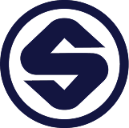

⌘
هوش مصنوعی خصوصی
طراحی و استقرار مدلهای زبانی در محیط خصوصی یا محلی، متناسب با الزامات داده و دسترسی سازمان.
گفتگو درباره راهکار ←از زیرساخت هوش مصنوعی خصوصی تا ایجنتهای متصل به گردشکار؛ راهکارهایی متناسب با دادهها، تیم و نیازهای سازمان شما.
برآمده از تجربه حرفهای در سازمانها

SolicoBitpinراهکارهایی برای اینکه هوش مصنوعی با سیستمها و فرایندهای سازمان شما هماهنگ شود.
طراحی و استقرار مدلهای زبانی در محیط خصوصی یا محلی، متناسب با الزامات داده و دسترسی سازمان.
گفتگو درباره راهکار ←ساخت ایجنتهای متصل به ابزارها و APIها برای پشتیبانی از تیمها و انجام فرایندهای مشخص.
گفتگو درباره راهکار ←دسترسی متمرکز به مدلها با توجه به مدیریت مصرف، کنترل دسترسی و نیازهای عملیاتی.
گفتگو درباره راهکار ←اتصال قابلیتهای AI به گردشکارهای روزمره و همراهی تیمها برای استفاده مؤثر از ابزارها.
گفتگو درباره راهکار ←نمونههایی از تجربه حرفهای در توسعه راهکارهای سازمانی؛ بدون نمایش اطلاعات محرمانه.
طراحی و استقرار زیرساخت خصوصی با مدلهای متنباز و دسترسی کنترلشده، بر پایه تجربه حرفهای در سولیکو.
توسعه ایجنت پشتیبانی فناوری اطلاعات برای کمک به کاربران و ثبت تیکت از درخواستهای آنها، در سابقه کاری سولیکو.
تجربه ساخت دروازه متمرکز LLM و راهاندازی پلتفرم دسترسی سازمانی به مدلها در بیتپین.
مشاهده مستندات تجربه ←هر سازمان دادهها، محدودیتها و شیوه کار خودش را دارد. ابتدا مسئله و محیط موجود را میشناسیم، سپس مسیر مناسبی برای طراحی، اجرا و انتقال دانش مشخص میکنیم.
شروع یک گفتگو ←بررسی نیاز، فرایندها و زیرساخت موجود
انتخاب معماری متناسب و ساخت راهکار
آمادهسازی تیم برای استفاده و توسعه
درباره چالشها و فرصتهای هوش مصنوعی در سازمانتان با ما صحبت کنید.